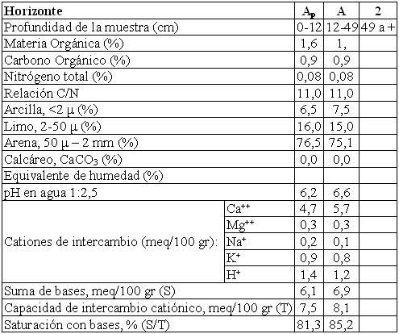

Ustipsamment típico, arenosa, mixta, térmica
Capacidad de uso: VIsc
Este suelo es excesivamente drenado con desarrollo incipiente en las terrazas de los ríos Santa Catalina, Ascochinga y paleocauces. Ocupa normalmente la parte alta de un mesorrelieve fluvial, conformando pequeñas subunidades longitudinales de pocas decenas de metros de ancho. Los materiales originarios son arenosos, normalmente con arenas sueltas limpias de cauce en profundidad. El escurrimiento es medio, la permeabilidad rápida y la pendiente local (mesorrelieve) puede llegar al 2% y el gradiente general de las unidades cartográficas mixtas que conforman no es mayor a 3%. Las limitantes son baja retención de humedad, drenaje excesivo y clima.
Descripción del perfil típico:
Un perfil representativo de los suelos de esta Serie fue descripto a 4,9 km al Oeste de la ciudad de Jesús María, departamento Colón, provincia de Córdoba.
Ap 0-12 cm; color en húmedo pardo grisáceo muy oscuro (10YR3/2); areno franco; estructura en bloques subangulares medios débiles; límite inferior abrupto, suave.
A 12-49 cm; color en húmedo pardo grisáceo muy oscuro (10YR3/2); areno franco; estructura en bloques subangulares medios moderados; límite inferior abrupto, ondulado.
2 49 cm a +; arenoso; suelto.
Cuadro Nº29
Datos analíticos Serie PUERTA DE HIERRO II
Situación: Latitud: 30º58’S Longitud: 64º09’O Altitud: 550 m.s.n.m.
 |